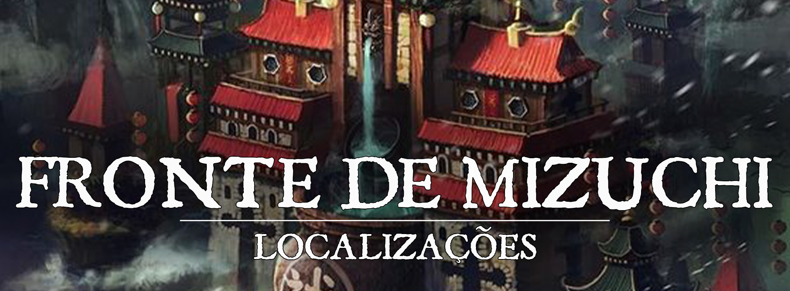

Fronte de Mizuchi
Descrição
O Fronte de Mizuchi é um forte que foi construído para monitorar a fronteira do Império das Nuvens com o deserto de Ishaar, o forte é administrado pelos Lâminas de Azure sob a jurisdição do Clã do Dragão. A finalidade do forte é principalmente fiscalizar a fronteira e verificar as intenções dos viajantes que buscam entrar nas terras turgonitas.
Descrição Visual:
34ee9428196a0f0545a5dd9d8e72ffa3.jpg |Fronte de Mizuchi
{kind=link}
A Fronte de Mizuchi é um posto avançado militarizado com construções e estátuas que remetem a imagem de Seiryuu e de suas águas purificadoras.
Assim como o povo de Aozora, os habitantes do Fronte em sua maioria são compostos por humanos, meio-elfos e outros youkais com traços dracônicos. Os traços dracônicos são muito vistos, principalmente entre aqueles com maior proximidade do Clã do Dragão e de Seiryuu.
Função:
O Fronte funciona como porta de entrada e saída de Turgon para o deserto de Ishaar. Para sair não é cobrada nenhuma taxa, porém para entrar nos domínios do Império das Nuvens, os guardas do fronte são orientados a cobrar uma taxa de pedágio, o valor não é alto, e varia de acordo com o tamanho da caravana que deseja passar pelos portões do fronte. Toda mercadoria que vem junto dos viajantes é sempre inspecionada com muita minúcia, para evitar qualquer tipo de contrabando ou tráfico.
NPCs Presentes
9fd1fc6c632dcbcc86da0ae92071cde6.jpg |Aokiji Ryuuzai
{kind=link}
Aokiji Ryuuzai: É um homem respeitado dentro do clã do Dragão por sua grande afinidade com o elemento do gelo e seu exímio controle do mesmo, além de ser um ótimo espadachim. Aokiji é primo de segundo grau de Seiji Ryuuzai, o líder do clã do Dragão, e por Seiji confiar bastante em suas habilidades e lealdade lhe foi confiado o comando do Fronte.
Organizações Presentes
Lâminas de Azure: Os soldados dos Lâminas de Azure fazem patrulhas e defendem o Fronte de Mizuchi.
História de Origem
O entreposto militar do Fronte de Mizuchi foi construído um pouco depois da unificação de Turgon como o Império das Nuvens. Seu objetivo sempre foi o mesmo, proteger as terras do império de invasores mal intencionados do deserto e coletar o pedágio dos viajantes.